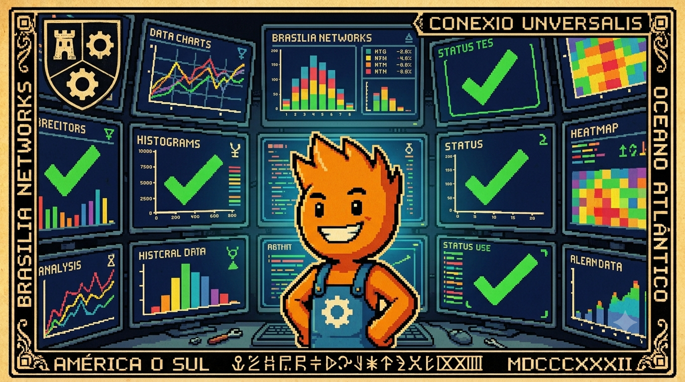

Canto VIII: O Farol da Telemetria
No farol que brilha forte na encosta do rochedo,
Vigiamos toda a frota pra afastar qualquer medo.
Se um caixa lá longe começa a se atrasar,
O heartbeat nos avisa antes mesmo de falhar!
A telemetria ativa nos traz tranquilidade,
E o suporte age rápido na loja da cidade.

A Síntese da Jornada de Soberania
Ao longo desta série, cada canto representou um passo de libertação tecnológica contra o dogma do acoplamento centralizado na nuvem:
- Canto I: Abandonamos o inchaço e o consumo pesado de RAM do Electron.
- Canto II: Denunciamos o excesso operacional e a fragilidade do Kubernetes na borda.
- Canto III: Redimimos a simplicidade do SQLite local tunado em modo WAL.
- Canto IV: Purificamos a interface adotando o minimalismo HTML-First com HTMX.
- Canto V: Ativamos a execução concorrente de hardware via Threads Virtuais.
- Canto VI: Blindamos os dados locais através do padrão Transactional Outbox.
- Canto VII: Desenvolvemos a recepção reativa desacoplada no Hub Central.
Agora, no Canto VIII, fechamos o ciclo da soberania com a inteligência observacional. Cada passo anterior nos afastou da dependência externa e nos trouxe autonomia. Mas a verdadeira soberania não reside no isolamento cego; ela exige coordenação consciente.
O Desafio de Monitorar Sistemas Descentralizados
Em uma rede com 3.200 caixas fisicamente isolados em diferentes partes do país, a maior dúvida do suporte técnico centralizado é: "as filiais estão operando normalmente?". Coletar logs de todos os caixas em tempo real na nuvem é inviável, pois consome banda de internet e gasta memória local preciosa.
A telemetria deve atuar como um farol: ela não busca exercer o controle remoto ou a vigilância intrusiva da borda. Em vez disso, ela provê diagnóstico, visibilidade e antecipação de falhas de hardware e software local, traduzindo autonomia local em governança global.
Arquitetura Observacional de Borda
Veja como os batimentos cardíacos (heartbeats) assíncronos de cada caixa chegam ao painel de monitoramento central na nuvem:
Exemplos de Telemetria Útil para o Caixa
Evitamos monitorar dados superficiais. Concentramos os batimentos em métricas que ditam a sobrevivência operacional da frota no balcão:
- Tamanho da Fila Outbox: O indicador definitivo se a loja perdeu conectividade. Se a fila cresce de forma constante, a internet caiu.
- Tempo de Resposta do Cupom (I/O Local): Se o processamento de gravação de arquivos ultrapassar 10ms, o SSD do caixa está apresentando desgaste crítico.
- Versão de Migrations SQL: Garante que todos os caixas executaram com sucesso a atualização de schemas do SQLite via Flyway.
O Modelo Push-Based e a Transmissão de Métricas
Na arquitetura tradicional, o Prometheus opera via modelo de *Pull* (raspando endpoints `/actuator/prometheus` ativamente). Contudo, em 3.200 caixas espalhados geograficamente, todos protegidos por firewalls e redes NAT locais, o servidor Prometheus na nuvem central não consegue fazer requisições diretas aos dispositivos físicos de caixa.
Por isso, o CaraCore PDV adota a Observabilidade Push-Based:
- Heartbeat Periódico: A cada 5 minutos, a aplicação de borda do caixa faz um envio assíncrono muito leve (um JSON pequeno de menos de 1KB) para o servidor central (*CaraCore Hub*).
- Proteção de Links Limitados: Se o link de contingência (4G/3G) estiver degradado ou operando com franquia curta, o sincronizador de telemetria desliga temporariamente os heartbeats secundários de CPU/RAM, concentrando 100% da banda no tráfego vital da fila Outbox de cupons fiscais.
- Otimização de Recursos do Caixa (2GB RAM): Coletas frequentes de estatísticas no Actuator podem gerar picos indesejados de GC (Garbage Collector) em computadores antigos. Para mitigar isso, as métricas de saúde são agregadas localmente em memória de forma leve antes de serem despachadas no ping periódico.
Na central, o Prometheus expõe as métricas coletadas indiretamente a partir do banco do Hub e gera os alertas visuais no Grafana. Se o painel apontar um tamanho de fila crescendo constantemente em alguma loja específica, o suporte técnico sabe que a internet local caiu, abrindo chamados preventivos com as operadoras.
⚖️ O Veredito da Bancada (Técnico vs. Negócios)
💻 Para Técnicos (A Baseline)
Exponha as métricas de fila local criando um indicador customizado no Actuator:
@Component public class OutboxHealthIndicator implements HealthIndicator { ... }.
O Micrometer expõe a contagem de pendências no endpoint `/actuator/health`. O agendador local envia esse JSON no ping periódico para o Hub, permitindo monitoramento centralizado de frota sem expor portas locais do PDV a conexões externas na rede NAT.
👔 Para Negócios (O Retorno)
Visibilidade em tempo real da saúde operacional de toda a sua rede de lojas. A matriz sabe exatamente quais lojas estão offline ou com problemas de hardware, permitindo acionar a manutenção corretiva de forma preventiva.
Conclusão da Série e O Amanhã Soberano
A soberania tecnológica não é isolamento — é a autonomia inteligente sustentada por visão observacional. O PDV soberano não é apenas rápido e resistente; ele é consciente de seu próprio estado e capaz de navegar de forma segura mesmo quando as piores tempestades de internet interrompem as conexões de rede locais.
Concluímos a série Cara Core provando que é perfeitamente viável construir sistemas de varejo físico resilientes, leves e imunes a quedas sem submeter a boca do caixa à fragilidade e complexidade de orquestrações centralizadas pesadas na nuvem. A autonomia local, monitorada e coordenada pelo farol da telemetria, ilumina o caminho para um novo ciclo de arquiteturas distribuídas no varejo de amanhã.
Hashtags
Contato
- E-mail: suporte@caracore.com.br
- Site: www.caracore.com.br
- LinkedIn: Cara Core Informática
Conheça a telemetria Bunker da Cara Core e tome o controle preventivo do faturamento das suas filiais.
Conhecer Telemetria